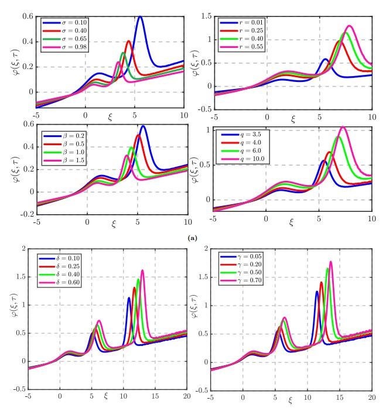
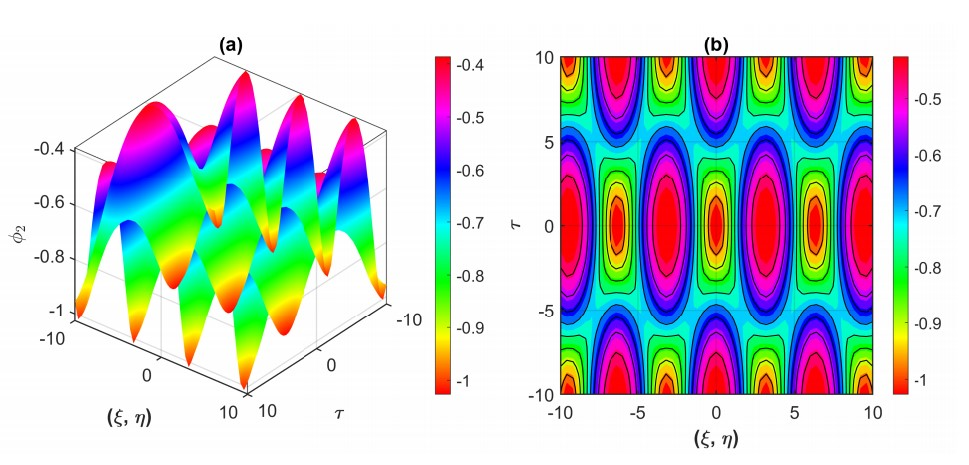
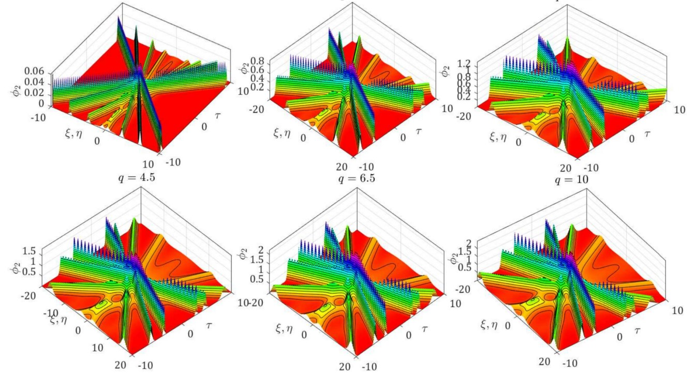

M.Sc. in Applied Mathematics
University of Chittagong — CGPA 3.73/4.00, 1st Class, 2nd Position

Applied Mathematician
Nonlinear waves, plasma dynamics & computational neuroscience. Currently applying for PhD positions abroad.
I started doing research in the third year of my BSc, building a compartmental model for dengue transmission under Professor Dr. Mohammed Aman Ullah — my first exposure to nonlinear ODEs, equilibrium analysis, and numerical work in MATLAB and Python.
In my Master's, I moved into plasma physics with Assistant Professor Shahrina Akter, learning Maple from scratch to study ion-acoustic wave propagation in Venus' upper ionosphere, and later the head-on collision of dust-acoustic solitary waves in dusty plasma. I picked up LaTeX along the way to write up the results.
I'm now a Research Assistant at CUET under Prof. Dr. M. G. Hafez, working on a fractal-fractional hybrid neuron-network model for neurodegenerative disease progression, combining Hodgkin–Huxley dynamics with Wilson–Cowan mean-field theory. Along the way I've also helped train other Master's, MPhil, and PhD students in the lab.
The common thread across epidemiology, plasma physics, and computational neuroscience is that I can pick up the tools a new field needs quickly enough to contribute, then pass that on to others — part of why I'm comfortable applying for a PhD without narrowing to one subfield in advance.

Islam, M.A., Tanjil, T.S. & Hafez, M.G. (2026). Cylindrical and spherical propagation of ion-acoustic overtaking multi-wave structures in the upper ionosphere of Venus.
Advances in Space Research
doi.org/10.1016/j.asr.2026.09.001

Akter, S., Tanjil, T.S. & Hafez, M.G. (2026). Interacting dust-acoustic multi-soliton and periodic waves in strongly coupled dusty plasma with ion-drag force.
Scientific Reports, 16, 28115
doi.org/10.1038/s41598-026-57659-z

Akter, S., Tanjil, T.S. & Hafez, M.G. (2026). Propagation and interaction of ion-acoustic single, N-solitons, and periodic waves in Venus' upper ionosphere.
Advances in Space Research, 77(4), 5236–5253
doi.org/10.1016/j.asr.2025.12.043
Working under Prof. Dr. M. G. Hafez on a fractal-fractional hybrid neuron-network model for neurodegenerative disease progression, combining Hodgkin–Huxley dynamics with Wilson–Cowan mean-field theory.
Working under Assistant Prof. Shahrina Akter on the head-on collision of dust-acoustic solitary waves in an unmagnetized dusty plasma with trapped ion distribution.
Taught HSC first-year students and Business Mathematics for the Management Department, Hathazari, Chittagong.
Edited a mathematics reference book prepared for the BCS competitive examination.
Mathematical software
Programming
Typesetting & design
Based in Dhaka, Bangladesh. Feel free to reach out directly.
Say Hello